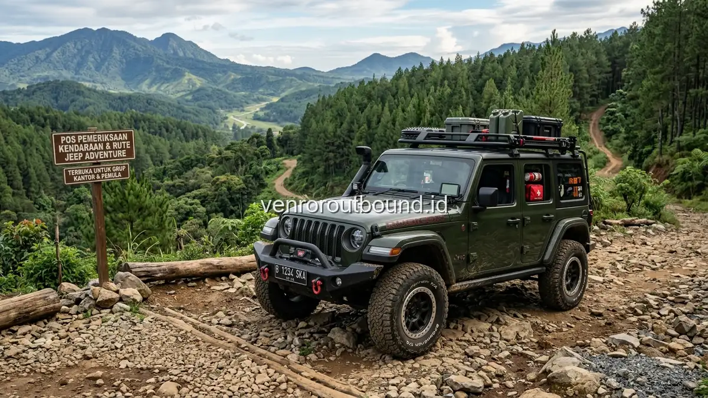

1. Prinsip Dasar Memilih Jalur Offroad untuk Rombongan Perusahaan
Jawaban singkat: Memilih rute offroad aman untuk pemula wajib memperhatikan kelaikan armada kendaraan 4x4, kompetensi pengemudi berlisensi, serta kontur rute yang tidak terlalu ekstrem. Pastikan jalur memiliki akses evakuasi medis darurat yang memadai, titik istirahat aman, dan didukung prosedur safety briefing menyeluruh sebelum konvoi diberangkatkan melalui paket outbound offroad Batu.
Bagi panitia internal Human Resources atau panitia gathering kantor, merencanakan agenda petualangan luar ruang selalu mendatangkan pertimbangan tersendiri. Di satu sisi, panitia ingin menghadirkan pengalaman yang berkesan dan menantang agar seluruh karyawan merasa terhibur. Namun di sisi lain, tanggung jawab atas keselamatan seluruh rekan kerja dari berbagai rentang usia dan latar belakang fisik menjadi prioritas utama yang tidak boleh dikompromikan.
Kegiatan offroad untuk rombongan korporat memiliki parameter yang berbeda dibandingkan dengan komunitas penghobi offroad ekstrem. Dalam konteks perusahaan, sebagian besar peserta umumnya adalah pemula yang baru pertama kali menaiki kendaraan 4x4 melintasi medan tanah atau bebatuan. Oleh karena itu, pemilihan jalur harus dilakukan secara cermat dengan mengedepankan aspek kehati-hatian, keteraturan konvoi, dan kejelasan mitigasi darurat.
2. Kenali Komposisi dan Karakter Fisik Peserta Anda
Langkah pertama yang wajib dilakukan panitia sebelum menentukan lokasi atau meminta proposal rute adalah melakukan pemetaan profil peserta di internal perusahaan:
- Rentang Usia & Keberagaman: Apakah rombongan didominasi oleh staf muda yang aktif, atau terdapat jajaran manajemen senior dan anggota keluarga dengan kebutuhan kenyamanan lebih tinggi?
- Riwayat Kesehatan Khusus: Pastikan panitia mendata peserta yang memiliki riwayat sakit punggung kronis, cedera leher, hipertensi berat, atau wanita hamil, agar dapat diberikan penempatan kendaraan khusus atau rute alternatif yang lebih lembut.
- Tingkat Kesiapan Mental: Sebagian peserta mungkin memiliki fobia ketinggian atau kecemasan terhadap guncangan. Komunikasi transparan mengenai gambaran rute akan sangat membantu meredakan kekhawatiran sebelum hari H.
3. Membandingkan Karakteristik Rute Populer di Jawa Timur
Kawasan pegunungan di Jawa Timur, khususnya area Batu, Malang, dan kaldera Bromo, menawarkan variasi lanskap yang menawan. Berikut adalah analisis konseptual mengenai kelebihan dan pertimbangan masing-masing tipe jalur:
A. Jalur Hutan Pinus (Contoh: Kawasan Coban Rondo & Pujon Kidul)
Karakteristik: Jalur didominasi oleh tanah liat berpadu kerikil halus di bawah naungan kanopi pohon pinus yang rimbun dan teduh. Udara sangat sejuk dan minim paparan terik matahari langsung.
Kelebihan untuk Pemula: Guncangan cenderung moderat, pemandangan asri, dan relatif mudah diakses dari pusat kota Batu. Namun, saat musim hujan, tanah liat dapat menjadi licin sehingga kecepatan armada perlu diturunkan dan dipandu oleh operator berpengalaman.
B. Jalur Perkebunan Teh & Sayur (Contoh: Lereng Gunung Arjuno)
Karakteristik: Menawarkan panorama terasering perkebunan yang membentang luas dengan kontur jalan tanah berundak dan tanjakan bervariasi.
Kelebihan untuk Pemula: Pemandangan sangat fotogenik dan memberikan sensasi keterbukaan alam. Akses jalan perkebunan biasanya memiliki batas jalur yang jelas, memudahkan koordinasi konvoi armada dalam jumlah banyak.
C. Jalur Pasir & Vulkanik (Contoh: Lautan Pasir Bromo)
Karakteristik: Hamparan pasir vulkanik luas dengan bukit-bukit savana dan kontur bergelombang khas kaldera gunung api aktif.
Kelebihan untuk Pemula: Menghadirkan pengalaman visual dramatis kelas dunia. Jalur pasir memberikan sensasi meluncur yang khas tanpa banyak bebatuan runcing tajam, namun membutuhkan armada yang prima dan perlindungan terhadap debu vulkanik.

4. Tabel Checklist Verifikasi Rute & Kelaikan Vendor
Gunakan tabel panduan berikut saat panitia melakukan koordinasi teknis bersama penyedia layanan sebelum menandatangani kontrak pemesanan:
| Faktor Evaluasi | Pertanyaan Kunci bagi Panitia | Standar Kelayakan yang Diharapkan |
|---|---|---|
| Kondisi Kendaraan | Apakah armada diperiksa secara berkala sebelum kegiatan? | Mesin sehat, rem berfungsi prima, ban bertapak kasar (MT/AT), dan sasis kokoh. |
| Kompetensi Driver | Siapa yang mengemudikan kendaraan selama acara? | Driver berpengalaman pada rute yang dilalui dan patuh SOP konvoi. |
| Karakter Medan | Apakah tingkat kecuraman sesuai peserta pemula? | Tingkat kemiringan dan rintangan berada pada level moderat dan tidak ekstrem. |
| Mitigasi Cuaca | Bagaimana rencana darurat jika hujan lebat turun? | Tersedia rute evakuasi alternatif atau pos perlindungan yang aman. |
| Akses Evakuasi | Bagaimana mekanisme evakuasi medis jika dibutuhkan? | Jalur terhubung dengan jalan aspal terdekat dan tersedia kotak P3K standar. |
| Komunikasi Konvoi | Bagaimana koordinasi antararmada di dalam perjalanan? | Menggunakan komunikasi radio (HT) yang terpantau oleh koordinator lapangan. |
| Kapasitas Jeep | Berapa jumlah peserta maksimal per satu unit kendaraan? | Rata-rata 4 hingga 5 peserta per armada untuk kenyamanan optimal. |
| Durasi Perjalanan | Berapa lama total durasi perjalanan di atas kendaraan? | Berkisar antara 1.5 hingga 3 jam termasuk jeda istirahat dan sesi foto. |
| Titik Berhenti | Apakah tersedia tempat istirahat dengan fasilitas dasar? | Terdapat rest area dengan toilet bersih dan area teduh yang memadai. |
| Safety Briefing | Apakah peserta mendapatkan penjelasan aturan keselamatan? | Wajib dilaksanakan sebelum seluruh peserta menaiki armada jeep. |
5. Memahami Spesifikasi Teknis Armada Jeep yang Layak untuk Rombongan Kantor
Sebagai panitia gathering perusahaan, memahami dasar-dasar kelaikan teknis armada 4x4 merupakan langkah preventif yang krusial. Panitia tidak perlu menjadi mekanik ahli, namun memahami standar operasional dasar berikut akan membantu membedakan penyedia layanan profesional dari operator amatir yang mengabaikan aspek keselamatan:
- Sistem Penggerak Empat Roda (4WD / 4x4 Aktif): Pastikan transfer case sistem 4x4 berfungsi normal pada mode 4-Low dan 4-High untuk memberikan traksi optimal saat melintasi tanjakan berlumpur atau turunan curam tanpa slip berlebihan.
- Kondisi Ban Spesialis Offroad: Ban kendaraan wajib menggunakan tipe Mud-Terrain (MT) atau minimal All-Terrain (AT) dengan ketebalan kembangan yang prima, bukan ban aspal perkotaan yang gundul atau retak halus.
- Sistem Pengereman Ganda & Handbrake: Mengingat jalur pegunungan memiliki kontur miring, sistem rem hidrolik dan rem tangan mekanis harus telah lolos uji responsivitas sebelum kendaraan membawa penumpang.
- Struktur Roll Bar & Bodi Pelindung: Kabin kendaraan harus dilengkapi rangka pelindung baja (roll cage / roll bar) yang kokoh untuk melindungi ruang kabin penumpang apabila terjadi benturan eksternal.
6. Prosedur Standar Operasional (SOP) Manajemen Risiko Cuaca dan Jalur
Kawasan dataran tinggi di Batu, Malang, dan Bromo memiliki dinamika mikroklimat yang dapat berubah dengan cepat dari cerah berawan menjadi kabut tebal atau hujan rintik. Vendor outbound yang memiliki sistem manajemen keselamatan terpadu selalu menerapkan tiga lapis mitigasi:
- Monitoring Pra-Kegiatan (T-24 Jam & T-2 Jam): Tim teknis lapangan melakukan peninjauan kondisi tanah dan prakiraan cuaca dari BMKG setempat untuk memastikan jalur utama bebas dari potensi genangan dalam atau tanah labil.
- Prosedur Konvoi Terpimpin (Lead & Sweeper Vehicle): Rombongan selalu dipimpin oleh kendaraan pemandu utama (lead car) di barisan depan dan dikawal oleh kendaraan penyapu (sweeper car) berfasilitas peralatan pemulihan (winch & strap) di barisan paling belakang.
- Protokol Pengalihan Jalur (Rerouting Protocol): Apabila terjadi hujan lebat mendadak di tengah perjalanan yang dinilai dapat mengurangi batas toleransi keselamatan, koordinator konvoi berhak menghentikan ekspedisi dan mengarahkan seluruh armada menuju jalur darurat terdekat.
7. Aturan Keselamatan Wajib bagi Seluruh Penumpang Offroad
Sebagian besar insiden di medan petualangan luar ruang terjadi akibat tindakan spontan peserta yang melanggar aturan keselamatan. Panitia perusahaan bersama tim fasilitator wajib mengumumkan dan menegakkan instruksi disiplin berikut:
- Posisikan Duduk dengan Benar: Seluruh peserta wajib duduk stabil di kursi kabin dan menggunakan sabuk pengaman (seat belt) jika tersedia pada armada.
- Pegang Handgrip yang Disediakan: Saat kendaraan melintasi medan berbatu atau miring, gunakan pegangan tangan yang terpasang di bodi kabin untuk menjaga keseimbangan.
- Dilarang Berdiri Saat Kendaraan Melaju: Berdiri di atas kabin terbuka saat kendaraan bergerak sangat berbahaya karena potensi guncangan mendadak atau ranting pohon yang melintang.
- Jangan Menjulurkan Anggota Tubuh: Tangan, kaki, dan kepala harus tetap berada di dalam batas bodi mobil untuk menghindari benturan dengan tebing, semak berduri, atau kendaraan lain.
- Patuhi Penuh Keputusan Operator: Jika driver atau fasilitator memutuskan untuk memperlambat laju atau menghentikan perjalanan karena kabut tebal atau longsoran kecil, seluruh peserta harus menghormati keputusan tersebut.
Tanyakan Pilihan Rute Offroad Paling Tepat untuk Kantor Anda
Dapatkan rekomendasi jalur offroad yang aman, nyaman untuk pemula, dan sarat pemandangan indah di Batu & Bromo bersama VENDOR OUTBOUND.
Konsultasi Rute via WhatsApp8. Kesimpulan: Sukses Gathering Berawal dari Ketelitian Memilih Jalur
Petualangan outbound offroad mampu menjadi sarana pelepas penat yang sangat efektif sekaligus membangun keakraban antarpegawai secara alami. Kunci utama dari keberhasilan kegiatan ini terletak pada kecermatan panitia dalam menyelaraskan ekspektasi petualangan dengan profil fisik peserta dan kelayakan infrastruktur keamanan rute.
Dengan menerapkan checklist evaluasi di atas dan bermitra dengan operator yang mengutamakan prosedur operasional standar, agenda offroad kantor Anda di kawasan Batu maupun Bromo akan berlangsung lancar, penuh tawa, dan meninggalkan kenangan positif bagi seluruh jajaran perusahaan.
Pertanyaan Sering Diajukan (FAQ)

Arby Ardiansyah
Arby Ardiansyah menulis konten informatif mengenai outbound, team building, corporate gathering, wisata outdoor, dan perencanaan kegiatan kelompok berbasis standar manajemen risiko terpadu di Indonesia.